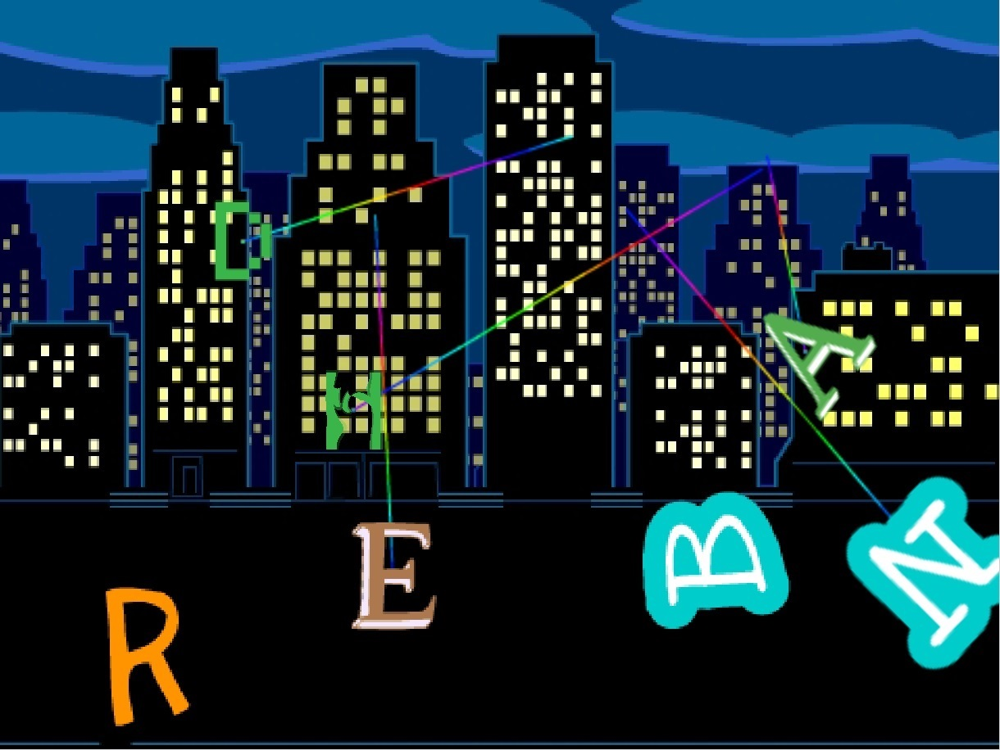
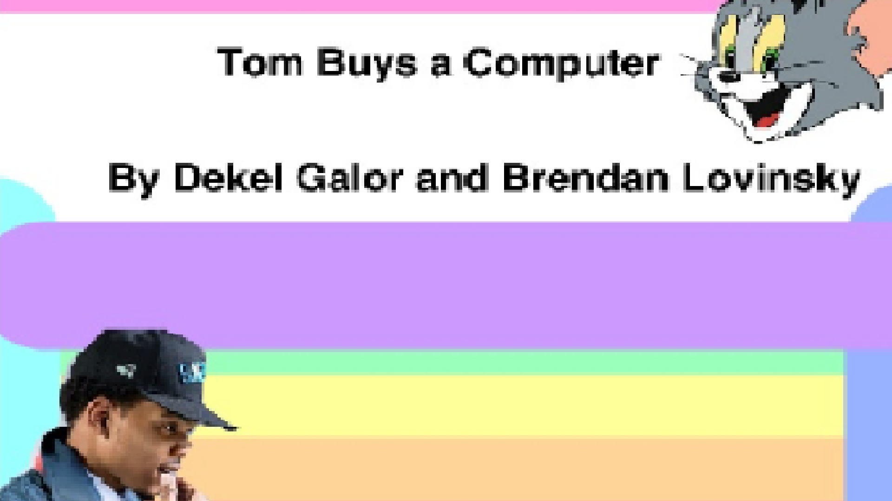
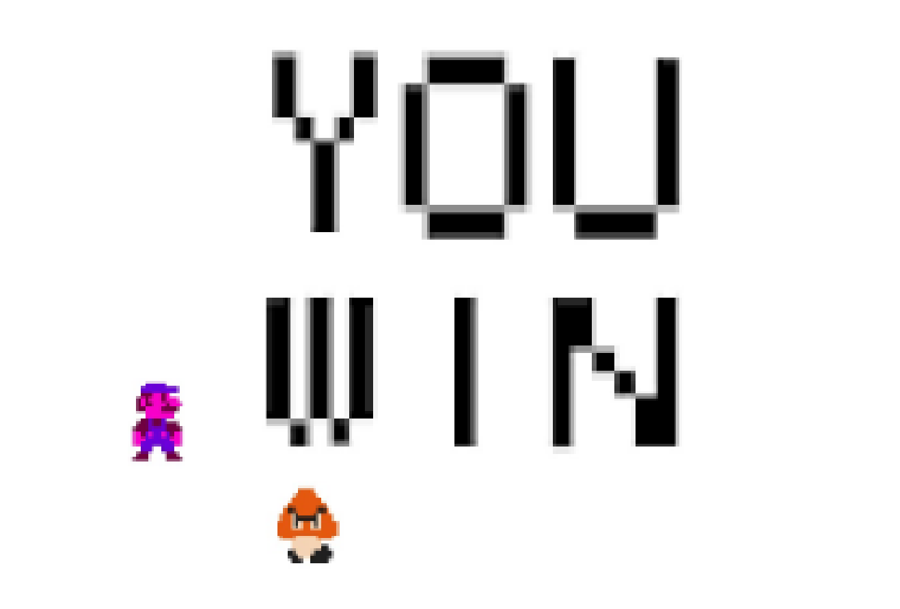

Scratch Content
Name Assignment

Description
Use scratch to design and create a program that shows my name. The requirements were to add a sprite for each letter in my name and give them 3 unique behaviors. The program needed to run when the green flag was clicked and for extra credit I added a function to reset the scene to the beginning each time the green flag was clicked.
Concepts Learned:
- Using event blocks - green flag clicked, when key pressed
- Conditional statements - used if statements to……
- Used loops - I used a forever block to……, I used a repeat until block to…….
- Sprites - I created my own sprites using the sprite editor, I used the library of sprites to find letters in my name and adjusted the costumes, .....
- Movement - I used the x and y values to make my sprites move to their original location when the green flag was clicked, I rotated the sprites to …….
- “If then”
- Change background
- Speach
- Wait for____seconds
- Timing of programing
- When ___ button is clicked
- When sprite touches change background
- When “this” then stop all
- Move sprite with arrow keys
Computer Buying Assignment

Description
Used scratch to help someone buy a computer by giving 4 options. I then told them all the information about the computer (processor, portability, space, etc). I had sprites that I made do a little skit about asking another sprite what computer he wants and tell him all of the details of the 4 computer options. I then singled out a computer for the person based on what he wants it for and what requirements he had for it.
Concepts Learned:
Final Project

Description
I made a game. It was a super mario game only not as good. But I did have cheat codes. I had sprites that I made do a little skit about asking another sprite what computer he wants and tell him all of the details of the 4 computer options. I then singled out a computer for the person based on what he wants it for and what requirements he had for it.